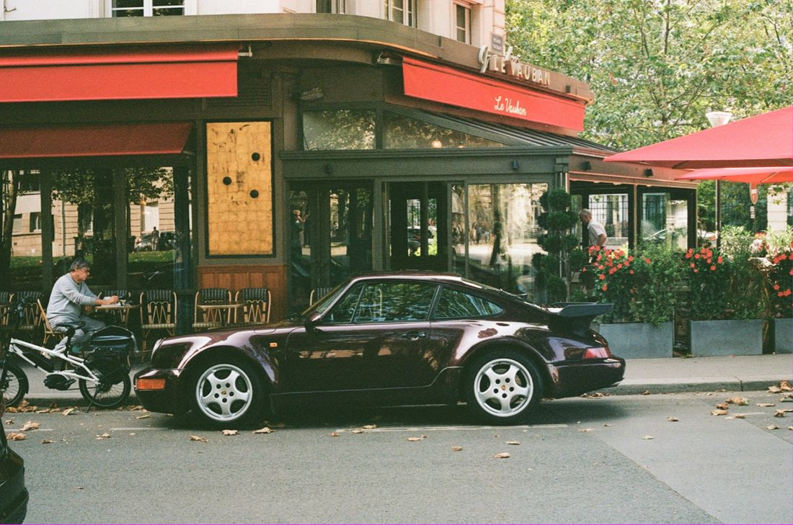
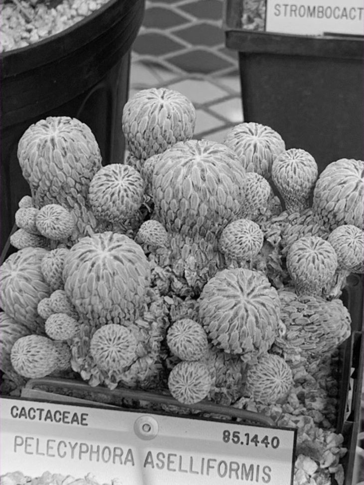
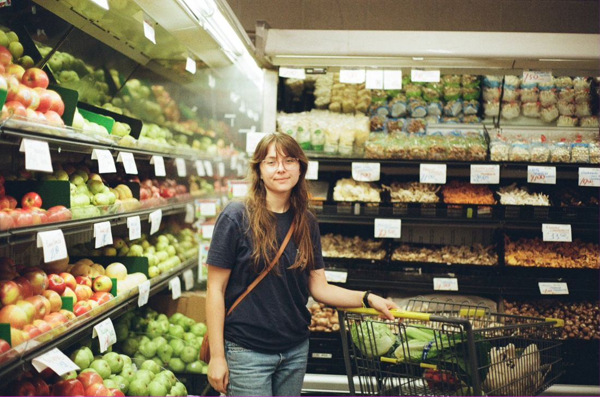
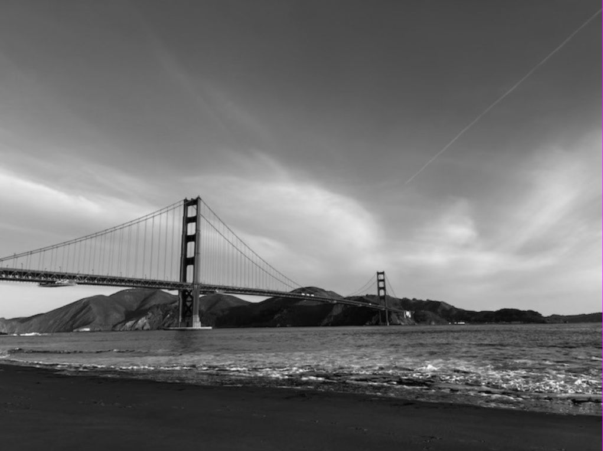
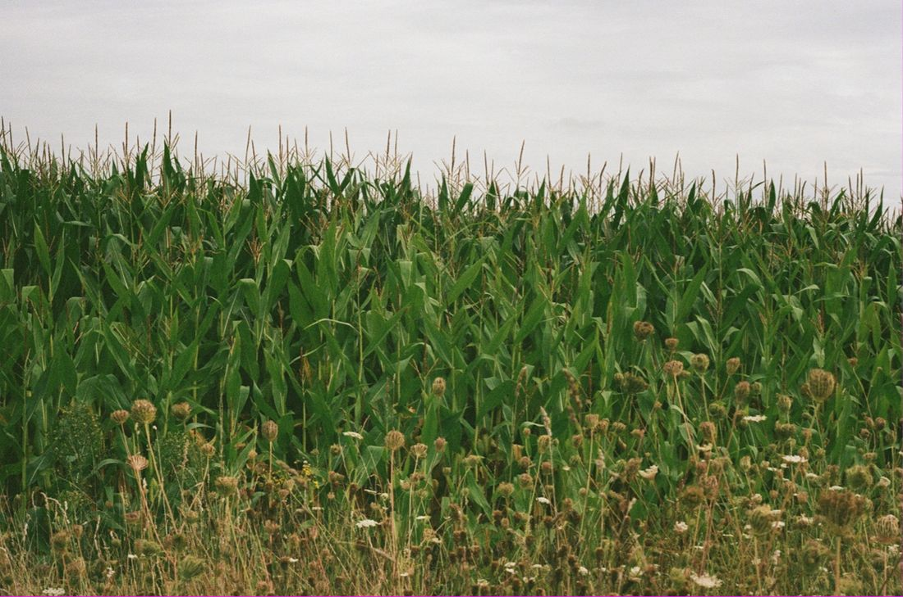
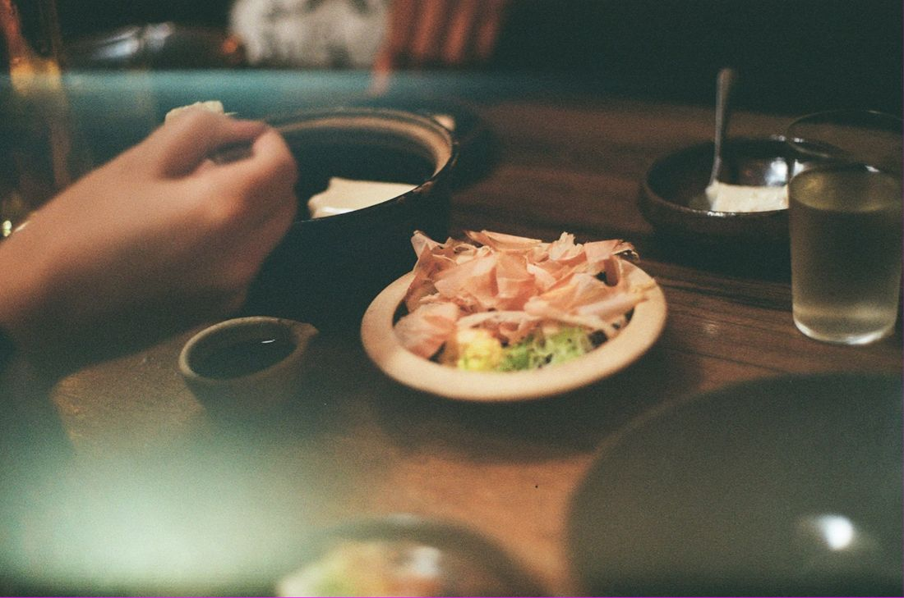

Photo
Photography
What I love about film is the anticipation and intention it requires. Every shot demands careful consideration of light, exposure, and composition, with no instant results — only the excitement of discovery. The raw grain and imperfections add depth, making each image feel organic and unfiltered. Even the mistakes become part of the story.








